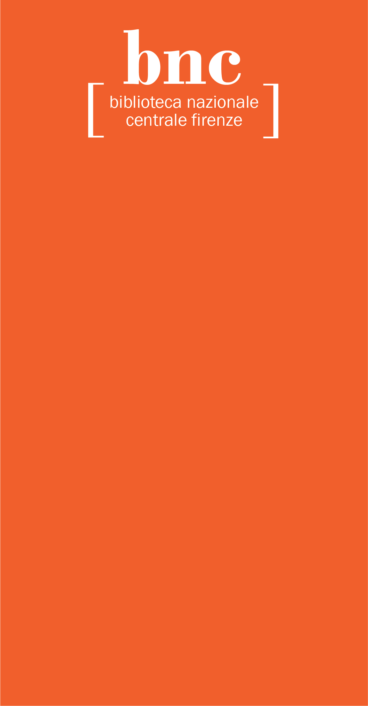

BNCF Branding
Branding and Identity System
The Biblioteca Nazionale Centrale di Firenze is part of Italy's national library system, located in Florence, and prides itself as a library working to preserve Italian culture and heritage. I worked to redesign their brand to reflect the library's scholarly emphasis, heritage, and modernizing needs, creating a system encompassing its logo, stationery, social media, and merchandise.

After conducting research with BNCF involving site visits, staff interviews, and an assessment of their current streams of communication, I identified several values fundamental to the library as an institution.
2. The library proudly preserves Italian culture and heritage and represents a national library system.
3. The library looks to the future as its collection modernizes and shifts to a web format. However, it wants to retain a tangible relationship to the book as an object.


1. The footnote — a representation of research and scholarship that suggests the tangible act of annotation and an active participation in history
2. The historic Italian font family Bodoni paired with the modern sans-serif Franklin Gothic — representing the library's identity as a contemporary institution that retains a long history and heritage
3. Bold, bright colors and patterns that evoke a more dynamic and approachable feel for visitors
The final brand system emphasizes flexibility. The logo functions in several formats, incorporating both an asterisk and brackets to evoke a footnote. It also expands into a vertical banner format, communicating the library's ability to adapt and reach for the future. The bracket and asterisk motifs feature throughout the system as patterns, borders, and standalone elements like stickers. As the library features various exhibitions and scholarly events over the course of the year, the system may be applied to different images for social media or merchandise.
© Sasha Kostenko 2024. Website developed by Sasha Kostenko. alexandrakostenko5@gmail.com